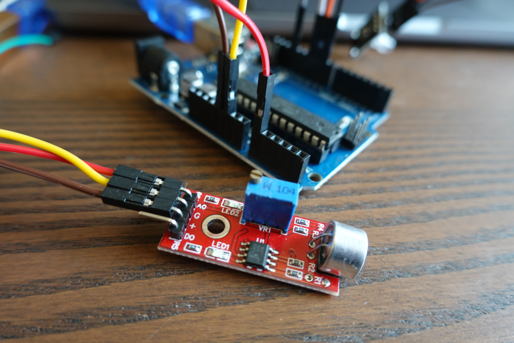
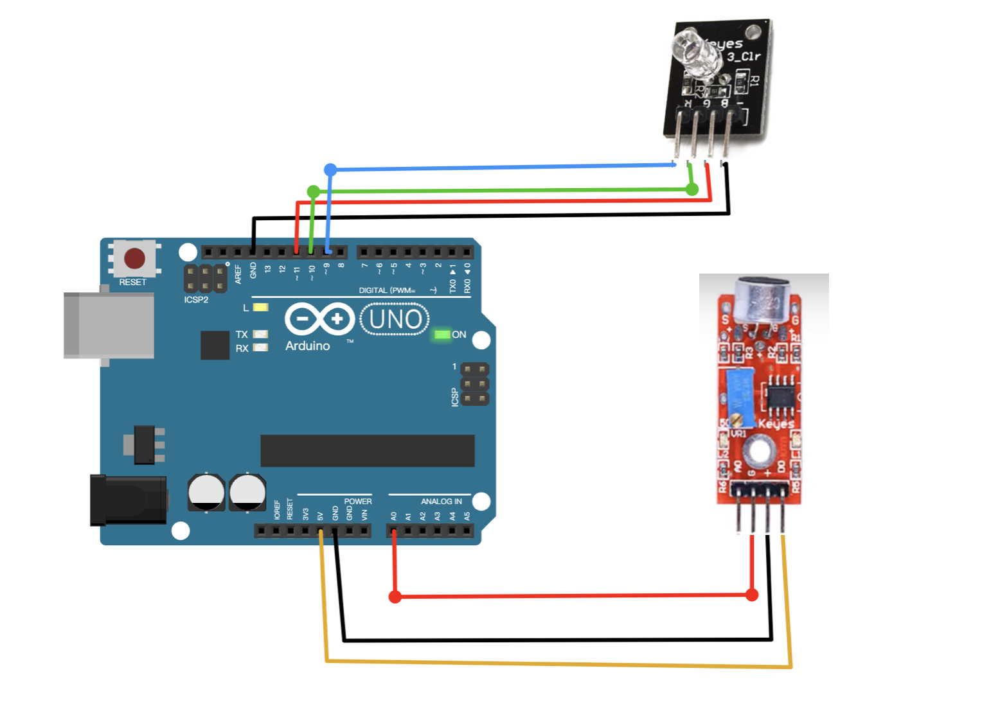

最近閒閒沒事突然想回味小時候玩的板子，順手把玩過的模組記錄下來。
會先用流水帳的方式寫，有餘力再補充相關知識。

實作 W104 聲音模組，偵測到聲音即透過外接 RGB 燈全彩模組亮燈。
W104 這款聲音模組配有電容式麥克風，比較常用在聲音警報系統中。
聲音模組的靈敏度可以使用一字起子調整 W104 上的可變電阻，順時針會提高輸出的門檻值。
接法： 
範例程式碼：
const int Red = 9; //腳位
const int Green = 10;
const int Blue = 11;
void setup() {
Serial.begin(9600);
pinMode(Red, OUTPUT);
pinMode(Green, OUTPUT);
pinMode(Blue, OUTPUT);
}
void loop() {
int r, g, b;
int sensorValue = analogRead(A0);
int lightValue = (sensorValue)%255; // 每個原色可以有0-255的變化，這邊可根據聲音靈敏度調整參數
Serial.println(lightValue);
if (lightValue > 255) {
analogWrite(Red, 255);
} else {
analogWrite(Red, sensorValue);
}
delay(10);
}
RGB 全彩模組實作細節可以參考這篇